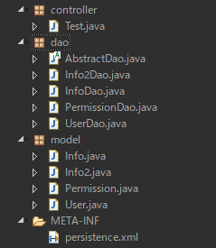
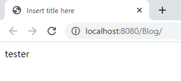
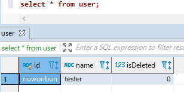

[Java] 51. SpringフレームワークでJPAを使い方(依存性注入@Autowired)
こんにちは。明月です。
この投稿はSpringフレームワークでJPAを使い方(依存性注入@Autowired)に関する説明です。
以前の投稿でJPA ORMフレームワークを通ってデータベースからデータを取得するしそれをDAOクラスを作成して使う方法に関して説明しました。
link - [Java] 50. JPAプロジェクトでDAOクラスを作成する方法
そのJPA ORMをSpringフレームワークで使いたいですが、そのままにDAOクラスのインスタンスを生成して使うことも問題ありません。
でも、DAOクラスというのは様々なインスタンスを生成して使うことより、Singletonパターンの形式で一回にインスタンスを生成して再使用するのがプログラム性能が良いです。
なぜなら、インスタンスを生成(new)するのは考えより時間がかかります。(何秒単位でかかることではありません。)そしてマスタテーブルのDAOクラスなら一回のデータ取得で何回に再使用する方が良いです。
そのためにDAOをSingletonパターンで作成して、それを取得するためにFactoryパターンを作成したらよいですが、Springフレームワークはそれを支援する依存性注入(Dependency Injection)という概念があります。
依存性注入とはSingletonパターンとFactoryパターンを併せたパターンだと思えばよいです。(実はSingletonパターンとFactoryパターンを併せた概念とは差異がありますが、ほぼ似てます。依存性注入パターンはデザインパターンのカテゴリで説明します。)
依存性注入パターンを使うためには@Autowiredアノテーションを知らなければならないです。
@AutowiredアノテーションはSpring設定のxml(mvc-config.xml)で設定したbeanオブジェクトを取得して使うアノテーションです。最初に呼び出すときにインスタンスが生成され、次から呼び出すときには生成されたインスタンスを再使用する方法です。(Singletonパターン)
まず、以前の投稿で作成したEntityクラスとDAOクラスをspringプロジェクトにコピーしましょう。
link - [Java] 39. Spring Web Frameworkを利用してウェブサービスプロジェクトを作成する方法

まず、mvc-config.xmlを設定しましょう。
<?xml version="1.0" encoding="UTF-8"?>
<beans xmlns="http://www.springframework.org/schema/beans"
xmlns:xsi="http://www.w3.org/2001/XMLSchema-instance"
xmlns:mvc="http://www.springframework.org/schema/mvc"
xmlns:context="http://www.springframework.org/schema/context"
xsi:schemaLocation="http://www.springframework.org/schema/mvc
http://www.springframework.org/schema/mvc/spring-mvc.xsd
http://www.springframework.org/schema/beans
http://www.springframework.org/schema/beans/spring-beans.xsd
http://www.springframework.org/schema/context
http://www.springframework.org/schema/context/spring-context.xsd">
<!-- コントローラーパッケージ設定 -->
<context:component-scan base-package="controller"/>
<!-- サーブレットからjspファイルを読み込んで変換するエンコードタイプ -->
<mvc:annotation-driven>
<mvc:message-converters>
<bean class="org.springframework.http.converter.StringHttpMessageConverter">
<property name="supportedMediaTypes">
<list>
<value>text/html;charset=UTF-8</value>
</list>
</property>
</bean>
</mvc:message-converters>
</mvc:annotation-driven>
<!-- viewフォルダ設定 -->
<bean class="org.springframework.web.servlet.view.InternalResourceViewResolver">
<property name="prefix" value="/WEB-INF/view/"/>
<property name="suffix" value=".jsp"/>
</bean>
<!-- 依存性注入のためにクラス設定(パッケージ名を含め、クラス名まで作成しなければならない。) -->
<bean id="userdao" class="dao.UserDao"></bean>
</beans>
mvc-config.xml設定のbeansタグの中のbeanタグを入れてどのクラスを依存性注入して使うかを作成します。
package dao;
import java.util.List;
import javax.persistence.NoResultException;
import javax.persistence.Query;
import model.User;
// UserデータのDaoクラス、AbstractDaoを継承してジェネリックタイプはUserクラスを設定する。
public class UserDao extends AbstractDao<User> {
// コンストラクタの再定義、protectedからpublicに変更してパラメータを再設定する。
public UserDao() {
// protectedコンストラクタを呼び出す。
super(User.class);
}
// すべてのデータ取得
@SuppressWarnings("unchecked")
public List<User> selectAll() {
// AbstractDao抽象クラスのtransaction関数を使う。
return super.transaction((em) -> {
// クエリを作成する。(実務ではcreateQueryではなく、createNamedQueryを使ってEntityでクエリを管理する。)
Query query = em.createQuery("SELECT u FROM User u");
// 結果リターン
return (List<User>) query.getResultList();
});
}
// Idによるデータを取得
public User selectById(String id) {
// AbstractDao抽象クラスのtransaction関数を使う。
return super.transaction((em) -> {
// クエリを作成する。(実務ではcreateQueryではなく、createNamedQueryを使ってEntityでクエリを管理する。)
Query query = em.createQuery("select u from User u where u.id = :id");
// パラメータ設定
query.setParameter("id", id);
try {
// 結果リターン
return (User) query.getSingleResult();
} catch (NoResultException e) {
// データがなしでエラーが発生するとnullでリターン
return null;
}
});
}
}
上のクラスは以前の投稿で作成したUserDaoクラスです。
package controller;
import javax.servlet.http.HttpServletRequest;
import javax.servlet.http.HttpServletResponse;
import javax.servlet.http.HttpSession;
import org.springframework.beans.factory.annotation.Autowired;
import org.springframework.beans.factory.annotation.Qualifier;
import org.springframework.stereotype.Controller;
import org.springframework.ui.ModelMap;
import org.springframework.web.bind.annotation.RequestMapping;
import dao.UserDao;
import model.User;
@Controller
public class Test {
// 依存性注入設定
@Autowired
// mvc-config.xmlで設定したbean-id
@Qualifier("userdao")
private UserDao userdao;
// 要請URLパターン
@RequestMapping(value = "/index.html")
public String index(ModelMap modelmap, HttpSession session, HttpServletRequest req, HttpServletResponse res) {
// userdaoのselectById関数を通ってデータを取得する。
User user = userdao.selectById("nowonbun");
// view(.jsp)でデータを渡すためのmodelmap
modelmap.addAttribute("Data", user.getName());
// viewのファイル名
return "index";
}
}
Controllerソースにでメンバー変数に@Autowiredを設定して依存性注入した変数だということを定義して、@Qualifierの設定でmvc-configのbeanをマッピングしてインスタンスを生成します。
index関数でuserdaoのselectById関数を利用してデータベースからデータを取得します。
データを取得してmodelmap変数を通ってviewにデータを表示します。
<%@ page language="java" contentType="text/html; charset=UTF-8" pageEncoding="UTF-8"%>
<!DOCTYPE html>
<html>
<head>
<meta charset="UTF-8">
<title>Insert title here</title>
</head>
<body>
<!-- modelmapから貰ったデータ -->
${Data}
</body>
</html>


Springで依存性注入する方法は基本的に上の形になります。
@Autowiredの使い方に関してはメンバー変数だけ使うことではありません。関数やコンストラクタにも使えます。
package controller;
import javax.servlet.http.HttpServletRequest;
import javax.servlet.http.HttpServletResponse;
import javax.servlet.http.HttpSession;
import org.springframework.beans.factory.annotation.Autowired;
import org.springframework.beans.factory.annotation.Qualifier;
import org.springframework.stereotype.Controller;
import org.springframework.ui.ModelMap;
import org.springframework.web.bind.annotation.RequestMapping;
import dao.UserDao;
import model.User;
@Controller
public class Test {
// 要請urlパターン
@RequestMapping(value = "/index.html")
// パラメータuserdaoに@Autowiredと@Qualifierのアトリビュートを設定して依存性注入をできる。
public String index(@Autowired @Qualifier("userdao") UserDao userdao, ModelMap modelmap, HttpSession session, HttpServletRequest req, HttpServletResponse res) {
// userdaoからselecteId関数を通ってデータを取得する。
User user = userdao.selectById("nowonbun");
// view(.jsp)でデータを渡すためのmodelmap
modelmap.addAttribute("Data", user.getName());
// viewのファイル名
return "index";
}
}
上のindex関数にUserDaoパラメータを入れて、前に@Autowired @Qualifier("userdao")を入れて使うことができます。
コンストラクタにも関数みたいにパラメータを入れて依存性注入を使えます。
package controller;
import javax.servlet.http.HttpServletRequest;
import javax.servlet.http.HttpServletResponse;
import javax.servlet.http.HttpSession;
import org.springframework.beans.factory.annotation.Autowired;
import org.springframework.beans.factory.annotation.Qualifier;
import org.springframework.stereotype.Controller;
import org.springframework.ui.ModelMap;
import org.springframework.web.bind.annotation.RequestMapping;
import dao.UserDao;
import model.User;
@Controller
public class Test {
// daoのメンバー変数
private final UserDao userdao;
// コンストラクタ - @Autowiredアトリビュートを使って依存性注入にする。
@Autowired
// パラメータでmvc-configのbean-idを設定
public Test(@Qualifier("userdao") UserDao userdao) {
// メンバー変数の値を設定
this.userdao = userdao;
}
// 要請urlパターン
@RequestMapping(value = "/index.html")
public String index(ModelMap modelmap, HttpSession session, HttpServletRequest req, HttpServletResponse res) {
// userdaoからselecteId関数を通ってデータを取得する。
User user = userdao.selectById("nowonbun");
// view(.jsp)でデータを渡すためのmodelmap
modelmap.addAttribute("Data", user.getName());
// viewのファイル名
return "index";
}
}
関数の変数で依存性注入してインスタンスを貰うかコンストラクタで依存性注入してメンバー変数を設定するか結果は同じです。依存性注入して変数にもシングルトンパターンなのでインスタンスはすべて同じです。
個人的にコンストラクタや関数パラメータでインスタンスを受けると可読性が悪くなるのでメンバー変数で設定する方が良いです。(仕様によりですが。)
そして@Autowiredのオプションの中でrequiredということがあります。このオプションをfalseに設定すればmvc-configにbeanを設定しなくてむエラーが発生せず、nullの値が入力されます。
基本値はtrueで設定しなかったらエラーが発生します。
でも、falseにしてエラーを飛び越えることよりエラーを発生してバグを発生しないようにする方が良いと思います。
ここまでSpringフレームワークでJPAを使い方(依存性注入@Autowired)に関する説明でした。
ご不明なところや間違いところがあればコメントしてください。
- [Java] Java servletでインスタンスを初期する方法2019/10/17 07:15:48
- [Java] 51. SpringフレームワークでJPAを使い方(依存性注入@Autowired)2019/10/16 07:32:55
- [Java] 50. JPAプロジェクトでDAOクラスを作成する方法2019/10/15 20:12:35
- [Java] 49. JPAでトランザクション(transaction)を扱う方法と共通関数作成する方法(Observerパターン)2019/10/14 20:13:44
- [Java] 48. JPAでQueryを使う方法(JPQLクエリを作成する方法)2019/10/13 22:55:52
- [Java] 47. JPAのEntityクラスのリファレンス設定(cascade, fetch)2019/10/13 00:40:08
- [Java] 46. JPAのEntityクラスの基本設定(@GeneratedValue、 @ManyToMany)2019/10/11 07:30:14
- [Java] 45. JPAを設定する方法2019/10/10 07:29:43
- [Java] 44. Web Spring frameworkのviewで使うプログラム言語(JSTL) - XML2019/10/09 07:34:08
- [Design pattern] 1-3. ファクトリメソッドパターン(Factory method pattern)2021/06/23 19:45:37
- [Java] WebSocketでチャット履歴をローディングする方法2021/06/15 18:34:45
- [Java] WebSocketを利用してユーザ(サイト運用者)が他のユーザとチャットする方法2021/06/15 17:20:08
- [Design pattern] 1-2. ビルダーパターン(Builder pattern)2021/06/11 19:06:28
- [Design pattern] 1-1. シングルトンパターン(Singleton pattern)2021/06/09 19:40:05
- [Design Pattern] デザインパターンの紹介2021/06/08 20:42:36
- [Tools] Dbeaver(無料Sql queryブラウザツール)2021/04/28 18:26:49
- [Bootstrap] HTMLデザインのフレームワークのBootstrap紹介2020/07/30 19:06:36
- [Python] メール(smtplib)を送信する方法2020/07/27 18:38:43
- [Python] HttpConnection(requestsモジュール)でウェブサーバーで接続する方法2020/07/20 14:41:51
- [Python] Excel(openpyxl)を扱う方法2020/07/16 16:40:31
- [Python] ファイル圧縮、解凍(zipfile)する方法2020/07/14 19:14:22
- [Python] Apache cgiでPythonを使う方法2020/07/09 19:58:19
- [Python] Web serverを起動する方法(http.server)2020/07/09 00:13:13
- [Python] WebSocketを使う方法2020/07/07 17:29:18